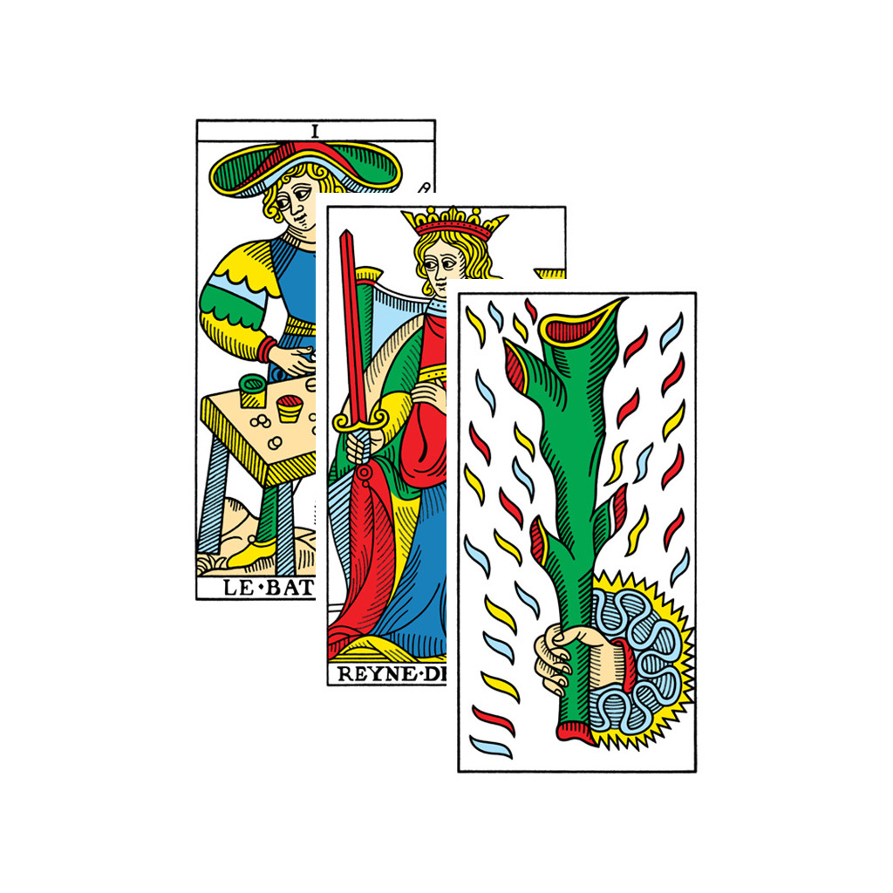
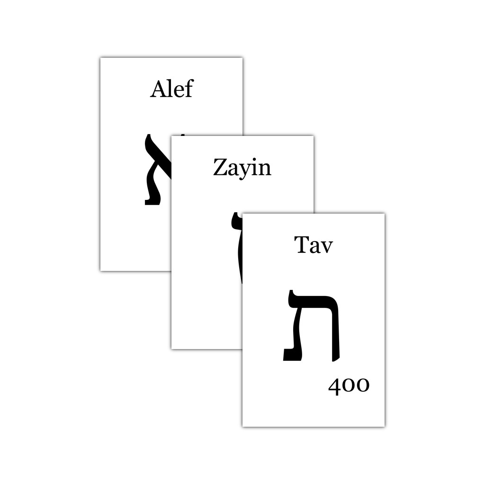
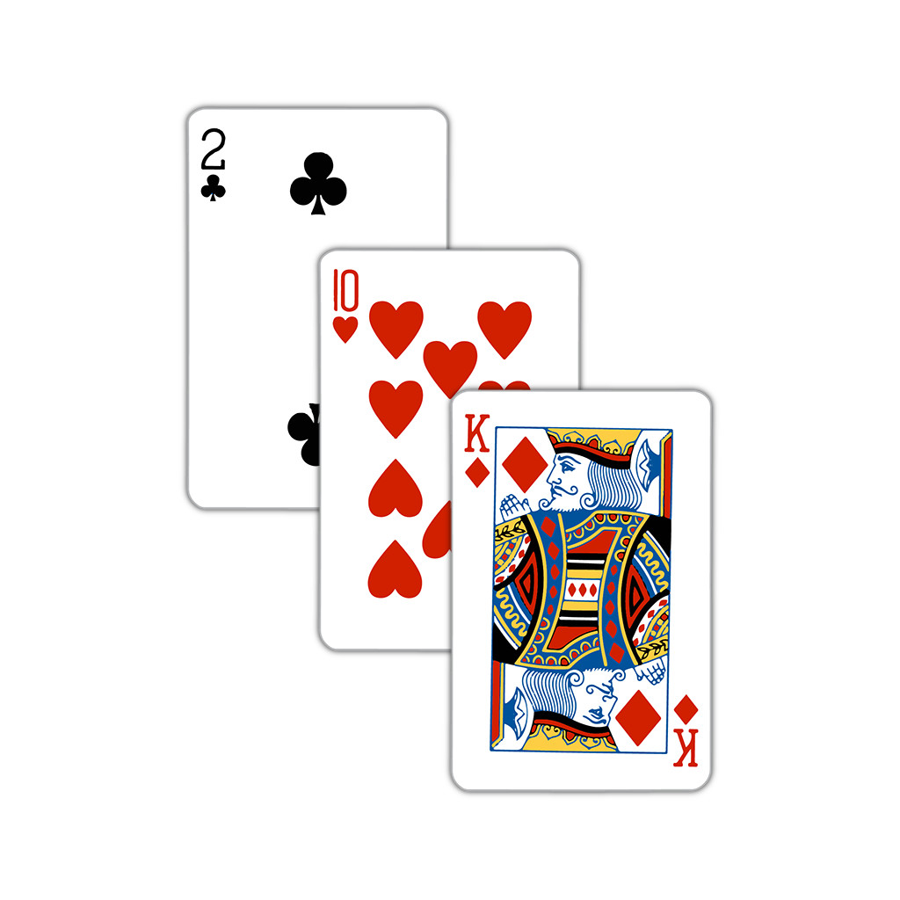

Tarot Decks

Here you find the most popular tarot decks for fortune reading or any other form of scenario revealed. Usually available in suites and arcana sections, you'll be able to draw cards within the available selections and place them in your favourite spread.
Pull cards from your favourite decks and place them in your favourite spreads for divination and fortune telling!
Go to the tarot decks!
Zodiac Oracle Deck

Here you find the best zodiacal oracle deck! Split into Planets, Constellations and Houses, one pulls one card of each to read the fortune it presents in plain english.
Pull one planet card, one constellation card and one house card to reveal your astrological fortune!
Go to the zodiac oracle deck!
Ouija Boards

Here you find the most popular alphabets to play ouija. The boards are available with only consonant letters so words can be approximatively created with the voyels being left at the discretion of the reader.
Pull consonant letters from your favourite board to create approximative words and have mystical answers to your questions!
Go to the ouija boards!
Playing Cards Deck

Here you find the most popular table game in the world! Similar to the minor arcana of any tarot deck, you can use the deck for divination and fortune telling.
Pull cards to fortell your future as you would with a tarot minor arcana!
Go to the playing cards deck!